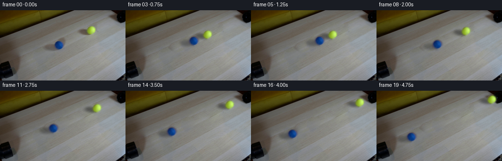
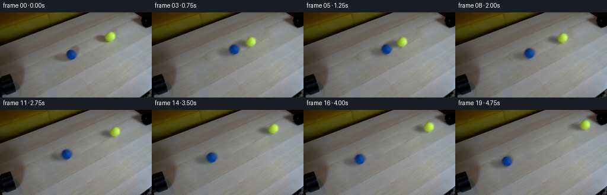
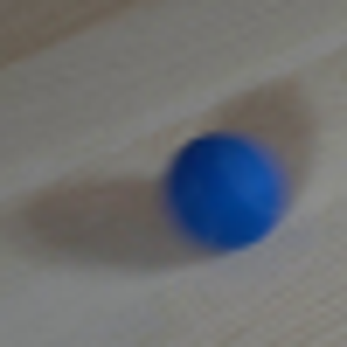
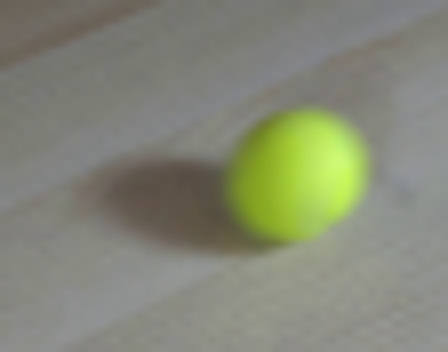
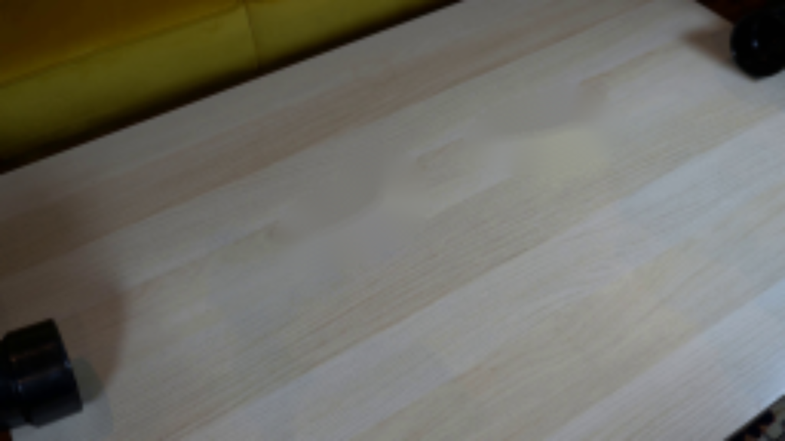
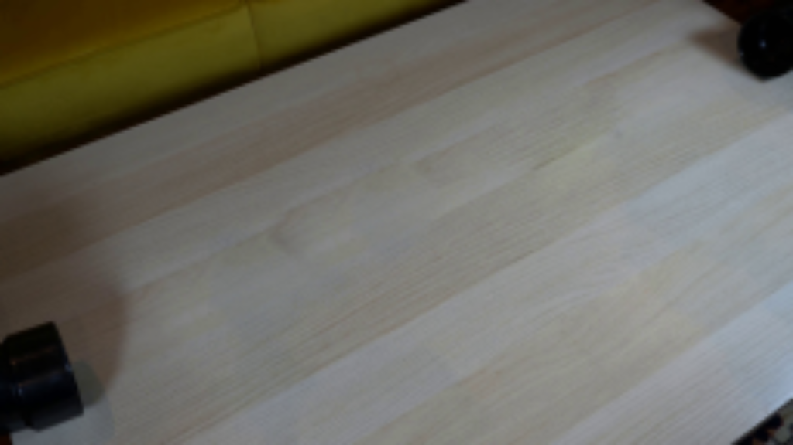
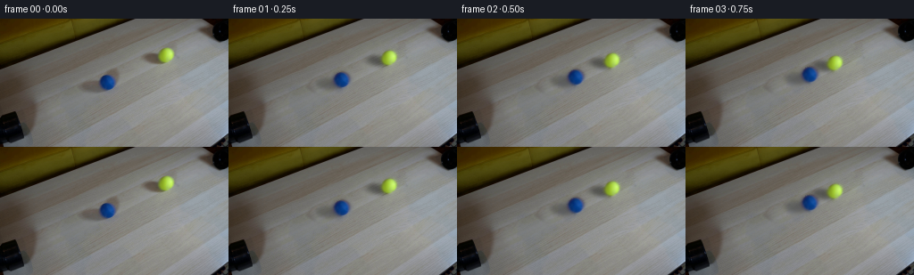
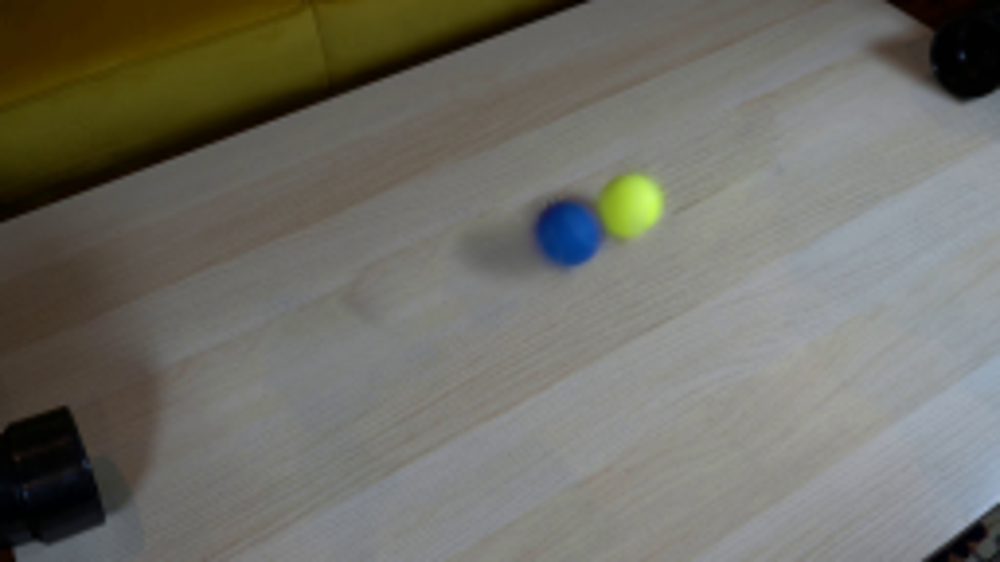
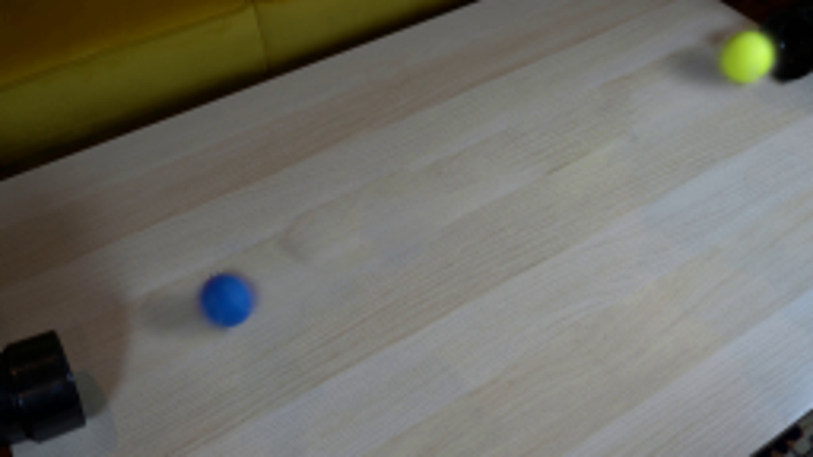
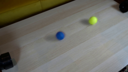

CODING AGENTS AS PIXEL WORLD MODELS
traex/GPT-6.1-Sol · 0031
点击播放 · 原生 RGB 像素
逐轮保存的候选
回放视频、检查图与代码变化。
每份候选均可单独播放。实际图片检查记录在下方工具轨迹中。
候选 01播放与检查图
点击播放 · 原生 RGB 像素

展开代码变化
--- 上一保存版本
+++ 本次保存版本
@@ -0,0 +1,119 @@
+from pathlib import Path
+import numpy as np
+import cv2
+from PIL import Image
+from scipy.ndimage import gaussian_filter, map_coordinates
+from artifact_io import save
+
+ROOT=Path(__file__).resolve().parent
+W,H=256,144
+Y,X=np.mgrid[:H,:W].astype(np.float32)
+original=np.array(Image.open(ROOT/'first_frame.png').convert('RGB'))
+
+
+def clean_table():
+ # Transplant unoccupied grain into the two small occupied table regions.
+ bg=original.copy()
+ for center,axes,offset in [((115,69),(29,19),(-46,24)),((178,41),(27,15),(-7,30))]:
+ m=np.zeros((H,W),np.uint8)
+ cv2.ellipse(m,center,axes,-18,0,360,255,-1)
+ dx,dy=offset
+ source=cv2.warpAffine(original,np.float32([[1,0,-dx],[0,1,-dy]]),(W,H),borderMode=cv2.BORDER_REFLECT)
+ yy,xx=np.where(m)
+ middle=((int(xx.min())+int(xx.max()))//2,(int(yy.min())+int(yy.max()))//2)
+ bg=cv2.seamlessClone(source,bg,m,middle,cv2.NORMAL_CLONE)
+ return bg.astype(np.float32)
+
+background=clean_table()
+
+class Ball:
+ def __init__(self,center,radii,color):
+ self.center=np.array(center,dtype=np.float32)
+ self.radii=np.array(radii,dtype=np.float32)
+ cx,cy=center
+ dx=X-cx;dy=Y-cy
+ radius=np.sqrt((dx/radii[0])**2+(dy/radii[1])**2)
+ # Optical softness is that in the input photograph, not a sharp CG contour.
+ a=1/(1+np.exp(np.clip((radius-1)*8.9,-80,80)))
+ a=np.where(radius<1.65,a,0).astype(np.float32)
+ self.alpha=a
+ # Real photographed diffuse shadow: keep its measured shape but discard grain.
+ lum0=original.astype(np.float32).mean(axis=2)
+ lum1=background.mean(axis=2)
+ ratio=np.clip(lum0/np.maximum(lum1,1),.36,1.025)
+ if color=='yellow':
+ sx,sy=cx-12,cy+4.4
+ region=((X-sx)/20)**2+((Y-sy)/9.0)**2
+ else:
+ sx,sy=cx-9,cy+3.6
+ region=((X-sx)/21)**2+((Y-sy)/13)**2
+ gate=np.clip((1.45-region)/.65,0,1)
+ # Fill sphere footprint with the underlying soft shadow before separating layers.
+ outside=radius>1.08
+ weight=gaussian_filter(outside.astype(np.float32),2.0)
+ filled=gaussian_filter(ratio*outside,2.0)/np.maximum(weight,.001)
+ shadow=(1-np.minimum(filled,1))*gate
+ shadow=gaussian_filter(shadow,.55)
+ self.transmission=1-shadow
+ under=background*self.transmission[:,:,None]
+ rgb=(original.astype(np.float32)-(1-a[:,:,None])*under)/np.maximum(a[:,:,None],.005)
+ rgb=np.clip(rgb,0,255)
+ # At the nearly transparent perimeter, extrapolate the photographed ball color.
+ solid=a>.28
+ from scipy.ndimage import distance_transform_edt
+ _,indices=distance_transform_edt(~solid,return_indices=True)
+ nearest=rgb[indices[0],indices[1]]
+ rgb=np.where((a<.28)[:,:,None],nearest,rgb)
+ self.rgb=rgb
+
+ def layers(self,pos):
+ off=np.asarray(pos)-self.center
+ coords=[Y-off[1],X-off[0]]
+ a=map_coordinates(self.alpha,coords,order=1,mode='constant',cval=0)
+ tr=map_coordinates(self.transmission,coords,order=1,mode='constant',cval=1)
+ rgb=np.stack([map_coordinates(self.rgb[:,:,i],coords,order=1,mode='nearest') for i in range(3)],axis=2)
+ return a,tr,rgb
+
+blue=Ball((120.13,71.32),(8.65,8.70),'blue')
+yellow=Ball((185.81,40.49),(8.70,8.45),'yellow')
+
+p0=blue.center.copy(); p1=yellow.center.copy()
+direction=(p1-p0)/np.linalg.norm(p1-p0)
+distance=np.linalg.norm(p1-p0)
+contact_distance=17.4
+collision_time=1.0
+speed=(distance-contact_distance)/(2*collision_time)
+
+
+def positions(t):
+ if t<=collision_time:
+ travel=speed*t
+ else:
+ dt=t-collision_time
+ rebound_speed=speed*.88
+ friction=1.3
+ dt=min(dt,rebound_speed/friction)
+ back=rebound_speed*dt-.5*friction*dt*dt
+ travel=speed*collision_time-back
+ return p0+direction*travel,p1-direction*travel
+
+
+def render(t):
+ positions_now=positions(t)
+ layers=[b.layers(p) for b,p in zip((blue,yellow),positions_now)]
+ out=background.copy()
+ for alpha,tr,rgb in layers:
+ out*=tr[:,:,None]
+ # Furthest sphere first, to respect the tabletop's view direction at contact.
+ for alpha,tr,rgb in layers[::-1]:
+ out=out*(1-alpha[:,:,None])+rgb*alpha[:,:,None]
+ return np.clip(np.rint(out),0,255).astype(np.uint8)
+
+
+def main():
+ frames=np.stack([original]+[render(i/4) for i in range(1,20)])
+ save(frames,ROOT)
+ Image.fromarray(render(0)).save(ROOT/'.tmp/reconstruction.png')
+
+if __name__=='__main__':
+ main()
候选 02播放与检查图
点击播放 · 原生 RGB 像素

展开代码变化
--- 上一保存版本
+++ 本次保存版本
@@ -91,7 +91,7 @@
else:
dt=t-collision_time
rebound_speed=speed*.88
- friction=1.3
+ friction=3.8
dt=min(dt,rebound_speed/friction)
back=rebound_speed*dt-.5*friction*dt*dt
travel=speed*collision_time-back
可观测工具轨迹
实际执行的命令与返回图片。
命令 1exit 0
/bin/bash -lc "ls -la && cat prompt.txt && printf '\\n---RULES---\\n' && cat GENERATION_RULES.md"
命令 2exit 0
/bin/bash -lc "cat artifact_io.py && python - <<'PY'
from PIL import Image
im=Image.open('first_frame.png'); print(im.size)
im.resize((1024,576)).save('.tmp/first_big.png')
PY"命令 3exit 0
/bin/bash -lc "python - <<'PY'
import importlib.util
for m in ['cv2','scipy','numpy','PIL']:
print(m,bool(importlib.util.find_spec(m)))
from PIL import Image
im=Image.open('first_frame.png')
im.crop((88,44,138,94)).resize((500,500)).save('.tmp/blue.png')
im.crop((149,19,205,63)).resize((560,440)).save('.tmp/yellow.png')
PY"命令 4exit 0
/bin/bash -lc "python - <<'PY'
import cv2, numpy as np
im=cv2.imread('first_frame.png')
mask=np.zeros(im.shape[:2],np.uint8)
# all visible displaced objects and cast shadows
cv2.ellipse(mask,(113,72),(26,14),-22,0,360,255,-1)
cv2.ellipse(mask,(124,64),(15,17),0,0,360,255,-1)
cv2.ellipse(mask,(177,43),(26,13),-8,0,360,255,-1)
cv2.ellipse(mask,(186,40),(12,13),0,0,360,255,-1)
bg=cv2.inpaint(im,mask,4,cv2.INPAINT_TELEA)
cv2.imwrite('.tmp/bg_telea.png',cv2.resize(bg,(1024,576)))
# poisson cloning from texture neighborhood
bg2=im.copy()
for center,axes,offs in [((115,69),(30,20),(-46,24)),((178,41),(28,15),(-7,30))]:
m=np.zeros(im.shape[:2],np.uint8); cv2.ellipse(m,center,axes,-18,0,360,255,-1)
dx,dy=offs
tex=cv2.warpAffine(im,np.float32([[1,0,-dx],[0,1,-dy]]),(256,144),borderMode=cv2.BORDER_REFLECT)
# seamless clone wants source mask midpoint center from bounds
y,x=np.where(m>0); c=((int(x.min())+int(x.max()))//2,(int(y.min())+int(y.max()))//2)
bg2=cv2.seamlessClone(tex,bg2,m,c,cv2.NORMAL_CLONE)
cv2.imwrite('.tmp/bg_clone.png',cv2.resize(bg2,(1024,576)))
PY"命令 5exit 0
/bin/bash -lc "python - <<'PY'
from PIL import Image
import numpy as np
im=np.array(Image.open('first_frame.png')).astype(float)
y,x=np.mgrid[:144,:256]
for color,crop in [('b',(107,135,57,86)),('y',(172,201,27,56))]:
a,b,c,d=crop
s=im[c:d,a:b]
if color=='b': w=np.maximum(0,s[:,:,2]-s[:,:,0]-15)
else: w=np.maximum(0,(s[:,:,1]-s[:,:,2])-20)
print(color,'centroid',np.sum(w*x[c:d,a:b])/w.sum(),np.sum(w*y[c:d,a:b])/w.sum())
for yy in [int(np.sum(w*y[c:d,a:b])/w.sum())]:
print('line',[(i,im[yy,i].astype(int).tolist()) for i in range(a,b)])
PY"命令 6exit 0
/bin/bash -lc "python - <<'PY'
import cv2,numpy as np
im=cv2.imread('first_frame.png').astype(float)
for name,con in [('b',im[:,:,0]-im[:,:,2]>45),('y',im[:,:,1]-im[:,:,0]>65)]:
contours,_=cv2.findContours(con.astype('uint8'),cv2.RETR_EXTERNAL,cv2.CHAIN_APPROX_NONE)
co=max(contours,key=cv2.contourArea)
print(name,cv2.fitEllipse(co),cv2.boundingRect(co),cv2.contourArea(co))
PY"命令 7exit 0
/bin/bash -lc "python - <<'PY'
import cv2,numpy as np
im=cv2.imread('first_frame.png'); bg=im.copy()
for center,axes,offs in [((115,69),(30,20),(-46,24)),((178,41),(28,15),(35,-17))]:
m=np.zeros(im.shape[:2],np.uint8); cv2.ellipse(m,center,axes,-18,0,360,255,-1)
dx,dy=offs
tex=cv2.warpAffine(im,np.float32([[1,0,-dx],[0,1,-dy]]),(256,144),borderMode=cv2.BORDER_REFLECT)
y,x=np.where(m>0); c=((int(x.min())+int(x.max()))//2,(int(y.min())+int(y.max()))//2)
bg=cv2.seamlessClone(tex,bg,m,c,cv2.NORMAL_CLONE)
cv2.imwrite('.tmp/bg_clone2.png',cv2.resize(bg,(1024,576)))
PY"命令 8exit 0
/bin/bash -lc "cat > generate.py <<'PY'
from pathlib import Path
import numpy as np
import cv2
from PIL import Image
from scipy.ndimage import gaussian_filter, map_coordinates
from artifact_io import save
ROOT=Path(__file__).resolve().parent
W,H=256,144
Y,X=np.mgrid[:H,:W].astype(np.float32)
original=np.array(Image.open(ROOT/'first_frame.png').convert('RGB'))
def clean_table():
# Transplant unoccupied grain into the two small occupied table regions.
bg=original.copy()
for center,axes,offset in [((115,69),(29,19),(-46,24)),((178,41),(27,15),(-7,30))]:
m=np.zeros((H,W),np.uint8)
cv2.ellipse(m,center,axes,-18,0,360,255,-1)
dx,dy=offset
source=cv2.warpAffine(original,np.float32([[1,0,-dx],[0,1,-dy]]),(W,H),borderMode=cv2.BORDER_REFLECT)
yy,xx=np.where(m)
middle=((int(xx.min())+int(xx.max()))//2,(int(yy.min())+int(yy.max()))//2)
bg=cv2.seamlessClone(source,bg,m,middle,cv2.NORMAL_CLONE)
return bg.astype(np.float32)
background=clean_table()
class Ball:
def __init__(self,center,radii,color):
self.center=np.array(center,dtype=np.float32)
self.radii=np.array(radii,dtype=np.float32)
cx,cy=center
dx=X-cx;dy=Y-cy
radius=np.sqrt((dx/radii[0])**2+(dy/radii[1])**2)
# Optical softness is that in the input photograph, not a sharp CG contour.
a=1/(1+np.exp(np.clip((radius-1)*8.9,-80,80)))
a=np.where(radius<1.65,a,0).astype(np.float32)
self.alpha=a
# Real photographed diffuse shadow: keep its measured shape but discard grain.
lum0=original.astype(np.float32).mean(axis=2)
lum1=background.mean(axis=2)
ratio=np.clip(lum0/np.maximum(lum1,1),.36,1.025)
if color=='yellow':
sx,sy=cx-12,cy+4.4
region=((X-sx)/20)**2+((Y-sy)/9.0)**2
else:
sx,sy=cx-9,cy+3.6
region=((X-sx)/21)**2+((Y-sy)/13)**2
gate=np.clip((1.45-region)/.65,0,1)
# Fill sphere footprint with the underlying soft shadow before separating layers.
outside=radius>1.08
weight=gaussian_filter(outside.astype(np.float32),2.0)
filled=gaussian_filter(ratio*outside,2.0)/np.maximum(weight,.001)
shadow=(1-np.minimum(filled,1))*gate
shadow=gaussian_filter(shadow,.55)
self.transmission=1-shadow
under=background*self.transmission[:,:,None]
rgb=(original.astype(np.float32)-(1-a[:,:,None])*under)/np.maximum(a[:,:,None],.005)
rgb=np.clip(rgb,0,255)
# At the nearly transparent perimeter, extrapolate the photographed ball color.
solid=a>.28
from scipy.ndimage import distance_transform_edt
_,indices=distance_transform_edt(~solid,return_indices=True)
nearest=rgb[indices[0],indices[1]]
rgb=np.where((a<.28)[:,:,None],nearest,rgb)
self.rgb=rgb
def layers(self,pos):
off=np.asarray(pos)-self.center
coords=[Y-off[1],X-off[0]]
a=map_coordinates(self.alpha,coords,order=1,mode='constant',cval=0)
tr=map_coordinates(self.transmission,coords,order=1,mode='constant',cval=1)
rgb=np.stack([map_coordinates(self.rgb[:,:,i],coords,order=1,mode='nearest') for i in range(3)],axis=2)
return a,tr,rgb
blue=Ball((120.13,71.32),(8.65,8.70),'blue')
yellow=Ball((185.81,40.49),(8.70,8.45),'yellow')
p0=blue.center.copy(); p1=yellow.center.copy()
direction=(p1-p0)/np.linalg.norm(p1-p0)
distance=np.linalg.norm(p1-p0)
contact_distance=17.4
collision_time=1.0
speed=(distance-contact_distance)/(2*collision_time)
def positions(t):
if t<=collision_time:
travel=speed*t
else:
dt=t-collision_time
rebound_speed=speed*.88
friction=1.3
dt=min(dt,rebound_speed/friction)
back=rebound_speed*dt-.5*friction*dt*dt
travel=speed*collision_time-back
return p0+direction*travel,p1-direction*travel
def render(t):
positions_now=positions(t)
layers=[b.layers(p) for b,p in zip((blue,yellow),positions_now)]
out=background.copy()
for alpha,tr,rgb in layers:
out*=tr[:,:,None]
# Furthest sphere first, to respect the tabletop's view direction at contact.
for alpha,tr,rgb in layers[::-1]:
out=out*(1-alpha[:,:,None])+rgb*alpha[:,:,None]
return np.clip(np.rint(out),0,255).astype(np.uint8)
def main():
frames=np.stack([original]+[render(i/4) for i in range(1,20)])
save(frames,ROOT)
Image.fromarray(render(0)).save(ROOT/'.tmp/reconstruction.png')
if __name__=='__main__':
main()
PY
python generate.py"命令 9exit 0
/bin/bash -lc "python - <<'PY'
from PIL import Image
for i in [1,4,12,19]:
Image.open(f'frames/{i:02d}.png').resize((1024,576)).save(f'.tmp/frame{i}.png')
PY"命令 10exit 0
/bin/bash -lc "python generate.py && python - <<'PY'
from PIL import Image
import numpy as np
from pathlib import Path
f=np.stack([np.array(Image.open(p)) for p in sorted(Path('frames').glob('*.png'))])
assert f.shape==(20,144,256,3) and f.dtype==np.uint8
assert np.array_equal(f[0],np.array(Image.open('first_frame.png')))
p=np.load('pixels.npz')['pixels']
assert p.shape==(144,256,20)
print('Verified 20 RGB frames, 256x144; frame 00 identical.')
PY"视觉工具实际返回图片 1

视觉工具实际返回图片 2

视觉工具实际返回图片 3

视觉工具实际返回图片 4

视觉工具实际返回图片 5

视觉工具实际返回图片 6
视觉工具实际返回图片 7

视觉工具实际返回图片 8

视觉工具实际返回图片 9

视觉工具实际返回图片 10

视觉工具实际返回图片 11

保存候选 2 份；完成命令 10 次；可验证图片返回 11 张。原始 API 响应与完整日志保留在本地。